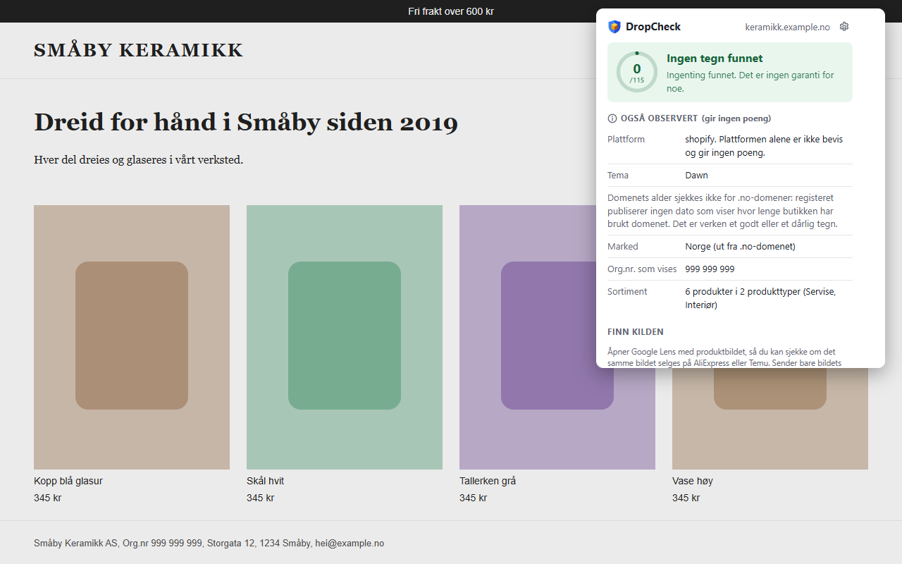

Problemer med dropshipping
Hva er dropshipping?
En dropshippingbutikk selger varer den aldri har på lager. Når du bestiller, sender butikken bestillingen videre til en leverandør, ofte på AliExpress, Temu, Alibaba eller Amazon, som sender pakken rett til deg, som regel fra Kina. Dropshipping er lovlig. Problemet er butikker som ser ut som et norsk merke og skjuler hvor varene kommer fra, hvor lang leveringstiden er og hvor returer skal.
Hvorfor er dropshippingbutikker så dyre?
Du betaler ofte flere ganger mer enn den samme varen koster hos leverandøren. Mellomlegget går til butikkens reklame og fortjeneste, ikke til bedre kvalitet eller service. Søker du på produktbildet (Find the source i DropCheck), finner du ofte samme vare på en markedsplass.
Hvorfor tar leveringen så lang tid?
Pakken kommer fra leverandøren i utlandet, ofte på én til tre uker og noen ganger lenger. Butikken kan likevel love rask levering, eller bare telle dagene til bestillingen sendes.
Ser varen ut som på bildene?
Ofte ikke. Bildene kommer fra leverandøren eller er laget med AI-verktøy, og varen som kommer kan være en billigere variant i et annet materiale eller en annen størrelse. Forbrukerorganisasjoner nevner dette som en av de vanligste klagene på dropshipping.
Kan jeg returnere varen?
Ved kjøp på nett har du som regel 14 dagers angrerett når selgeren er i EØS. Dropshippingbutikker krever ofte at returen sendes til et lager i Kina for din regning, noe som kan koste mer enn varen er verdt. Noen oppgir returadressen først etter at du har tatt kontakt.
Må jeg betale toll eller mva?
Ja, på varer fra utlandet. Kjøper du fra en nettbutikk som er registrert i VOEC-ordningen, betaler du mva i kassen for varer under 3000 kroner. Er butikken ikke registrert, kreves mva, eventuell toll og et gebyr inn når pakken kommer, og det kan bli dyrere enn du regnet med.
Er varene trygge?
Varer fra ukjente leverandører oppfyller ikke alltid reglene for kjemikalier, elsikkerhet eller leker. Miljødirektoratet har råd om trygg netthandel. Vær ekstra forsiktig med ladere, elektronikk, leker, kosmetikk og smykker.
Jeg har allerede bestilt fra en dropshippingbutikk. Hva gjør jeg nå?
Ta skjermbilder av produktsiden, ordrebekreftelsen, vilkårene og alle e-poster. Kontakt butikken skriftlig og gi den en frist. Svarer den ikke eller sier nei, kan du klage til kortutstederen og be om tilbakeføring, eller åpne en sak hos Klarna eller PayPal. Gjør det raskt: banker og betalingstjenester har tidsfrister.
Hvem kan hjelpe meg?
Forbrukerrådet gir råd og kan mekle i klager på norske butikker, og Forbruker Europa hjelper med butikker i andre europeiske land. For butikker utenfor Europa kan de gjøre lite; tilbakeføring via kortet i svaret over er ofte den eneste måten å få pengene tilbake på.
Hvordan melder jeg fra om en useriøs butikk?
Meld fra om villedende butikker til Forbrukertilsynet. Tipsene hjelper tilsynet å se mønstre, selv om det ikke kan løse din enkelte sak. Du kan også melde butikken til DropCheck med skjemaet Missed dropshipper.
Er alle dropshippingbutikker dårlige?
Nei. Noen butikker sier åpent at de sender fra en leverandør i utlandet, oppgir realistisk leveringstid og håndterer returer ordentlig. Problemet er butikker som skjuler det bak et oppdiktet norsk merke. Derfor rapporterer DropCheck observasjoner, ikke beskyldninger.
Hva DropCheck gjør
Klikk på DropCheck-ikonet på en butikks side. DropCheck leser siden, butikkens egne kjøpsvilkår, frakt- og kontaktsider og, på Shopify, produktkatalogen. Deretter listes hvert tegn som ble funnet, hvorfor det betyr noe, og en samlet vurdering. Ingenting sendes til DropCheck eller noen andre: analysen skjer i nettleseren din.
Hvordan vurderingen regnes ut
Hvert tegn gir poeng i en av fire kategorier. Hver kategori har et tak, så ingen enkelt type bevis kan avgjøre vurderingen alene: et nytt domene pluss manglende organisasjonsnummer pluss en gratis e-postadresse teller fortsatt bare som svak identitet. En butikk må vise tegn fra mer enn én retning for å regnes som sannsynlig dropshippingbutikk.
| Kategori | Tak | Tegn |
|---|---|---|
| Leverandør | 50 | Produktbilder som har beholdt filnavn fra AliExpress, Alibaba, Amazon, Temu eller Shein; Amazon-produkt-ID-er fra importapper; bilder med standardnavnet fra en AI-bildegenerator; returer til Kina eller et ikke navngitt "internasjonalt lager"; kjøperen betaler toll eller importmva på innenlandske bestillinger; levering på ti dager eller mer; dropshippingapper og temaer. |
| Identitet | 35 | Et domene eller sortiment som er yngre enn seks måneder; manglende organisasjons- eller MVA-nummer; bare utenlandske telefonnumre; en e-postadresse på et annet merkes domene; en gratis e-postadresse; plassholdertekst fra en mal som aldri ble fylt ut. |
| Salgspress | 20 | Nedtellinger, "kun N igjen" og "N personer ser på dette". |
| Priser | 20 | De fleste varer satt ned 50 % eller mer fra en overstreket pris. |
- Sannsynlig dropshippingbutikk (Likely dropshipper) - 60 poeng eller mer.
- Blandede tegn (Mixed signals) - 30 til 59 poeng. Verdt å se nærmere på.
- Ingen tegn funnet (No dropshipping signals found) - under 30 poeng.
- Markedsplass som selger fra Kina - på Temu, Shein, AliExpress, Alibaba, DHgate, Banggood og Wish selv. Ingen poeng: de er ikke forkledde butikker, men levering, importavgifter, returer og produktsikkerhet fungerer på samme måte.
- Markedsplass med eksterne selgere - på Amazon, CDON og Fyndiq, som selger varer fra mange selgere, noen utenfor Europa. En påminnelse om å sjekke hvem som selger varen og hvor den sendes fra.

Plattformen butikken kjører på, anmeldelsesapper og betalingslogoer gir aldri poeng: de vises bare som sammenheng. Tekst som begrenser toll til bestillinger fra utlandet, eller en norsk eller svensk returadresse, teller ikke mot butikken. Manglende organisasjonsnummer teller bare når de andre tegnene allerede gir 30 poeng, fordi mange seriøse butikker ikke viser det. Et telefonnummer i et nordisk naboland regnes ikke som utenlandsk.
Spørsmål om DropCheck
Hvordan ser man om en nettbutikk dropshipper?
Typiske tegn er produktbilder som har beholdt filnavn fra AliExpress, Alibaba, Amazon, Temu eller Shein, returer som skal sendes til Kina eller til et ikke navngitt internasjonalt lager, at kjøperen må betale toll eller importmva på varer som sendes innenlands, leveringstid på ti dager eller mer, et nyregistrert domene eller et sortiment som er opprettet de siste månedene, manglende organisasjonsnummer, et utenlandsk telefonnummer, nedtellinger og at nesten alle varer er satt ned 50 prosent eller mer. Ett enkelt tegn sier lite; flere sammen er en sterk indikasjon.
Betyr en advarsel at butikken er svindel?
Nei. Dropshipping er lovlig. En advarsel betyr at butikken viser tegn på å videreselge varer fra noen andre, noe som ofte betyr lengre levering, returer til utlandet og en kvalitet som avviker fra bildene. DropCheck rapporterer observasjoner om sidene, ikke en vurdering av firmaet.
Hvorfor betyr filnavnene på produktbildene noe?
Butikker som kopierer annonser fra en markedsplass laster ofte opp leverandørens bilder uendret.
Filnavnene beholder markedsplassens bilde-ID, for eksempel en lang kode som begynner med
O1CN01 (Alibaba, Taobao, 1688), en Amazon-kode som slutter på _AC_ eller
en Temu-kode som slutter på -goods.
En butikk som fotograferer sine egne produkter har ingen grunn til å ha slike navn.
Hvilke data sender DropCheck?
Analysen skjer i nettleseren din. For andre domener enn .se, .no, .dk og .de sendes bare butikkens domenenavn til rdap.org for å finne registreringsdatoen. En bilde-URL sendes til Google Lens bare når du klikker på den under "Find the source".
Hvilke butikker fungerer det på?
Alle nettbutikker, men best på Shopify, der de fleste dropshippingbutikker ligger, fordi DropCheck da også kan lese produktkatalogen. Organisasjonsnumre, adresser og retningsnumre gjenkjennes for Norge og Sverige; tegn i bilder, vilkår og priser fungerer for butikker i alle land.
DropCheck vurderte en butikk feil. Hva gjør jeg?
Rapporter det gjerne. Butikker som DropCheck vurderer feil er de mest nyttige dataene for å forbedre det. Bruk False alarm for en ærlig butikk som ble flagget, eller Missed dropshipper for en dropshippingbutikk som ikke ble flagget. Du kan skrive på norsk.
Hvordan installerer jeg det?
Last ned zip-filen fra siste versjon
og pakk den ut. Åpne chrome://extensions, slå på Utviklermodus, klikk på Last inn
upakket og velg den utpakkede mappen.